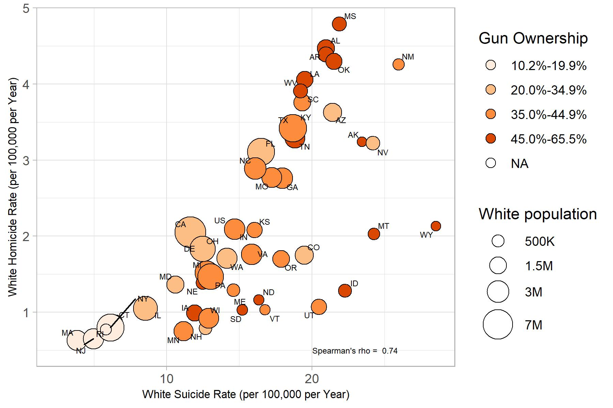

Where Do People Drink The Most Beer, Wine And Spirits?
In this project realised with my group at London Business School for the course “Data Analytics for Finance”, we will explore a dataset on the consumption and production of alcohol.
# Loading the data
library(fivethirtyeight)
data(drinks)
We’ll check first for any missing variable. Fortunately, our dataset is complete and we have no missing values.
# Using glimpse and skim to understand the dataframe
glimpse(drinks)
## Rows: 193
## Columns: 5
## $ country <chr> "Afghanistan", "Albania", "Algeria", "...
## $ beer_servings <int> 0, 89, 25, 245, 217, 102, 193, 21, 261...
## $ spirit_servings <int> 0, 132, 0, 138, 57, 128, 25, 179, 72, ...
## $ wine_servings <int> 0, 54, 14, 312, 45, 45, 221, 11, 212, ...
## $ total_litres_of_pure_alcohol <dbl> 0.0, 4.9, 0.7, 12.4, 5.9, 4.9, 8.3, 3....
skim(drinks)
(#tab:glimpse_skim_data)Data summary
| Name |
drinks |
| Number of rows |
193 |
| Number of columns |
5 |
| _______________________ |
|
| Column type frequency: |
|
| character |
1 |
| numeric |
4 |
| ________________________ |
|
| Group variables |
None |
Variable type: character
Variable type: numeric
| beer_servings |
0 |
1 |
106.16 |
101.14 |
0 |
20.0 |
76.0 |
188.0 |
376.0 |
▇▃▂▂▁ |
| spirit_servings |
0 |
1 |
80.99 |
88.28 |
0 |
4.0 |
56.0 |
128.0 |
438.0 |
▇▃▂▁▁ |
| wine_servings |
0 |
1 |
49.45 |
79.70 |
0 |
1.0 |
8.0 |
59.0 |
370.0 |
▇▁▁▁▁ |
| total_litres_of_pure_alcohol |
0 |
1 |
4.72 |
3.77 |
0 |
1.3 |
4.2 |
7.2 |
14.4 |
▇▃▅▃▁ |
Let’s now see which 25 countries drink the most beer.
# First we subset the 25 that drink most beer and then we plot in descending order
countries_25beer<- drinks %>%
top_n(25,beer_servings)
#constructing graph
ggplot(data = countries_25beer, aes(y= reorder(country,beer_servings), x=beer_servings))+
geom_bar(stat='identity')+
labs(x="Consumption of Beer (in Servings)", y="Countries", title = "Top 25 Countries by Beer Consumption")

But what about wine?
# First we subset the 25 that drink most wine and then we plot in descending order
countries_25wine<- drinks %>%
top_n(25,wine_servings)
#constructing graph
ggplot(data = countries_25wine, aes(y= reorder(country,wine_servings), x=wine_servings))+
geom_bar(stat='identity')+
labs(x="Consumption of Wine (in Servings)", y="Countries", title = "Top 25 Countries by Wine Consumption")

Finally, we can also see for the 25 countries drinking the most spirit.
# First we subset the 25 that drink most spirits and then we plot in descending order
countries_25spirit<- drinks %>%
top_n(25,spirit_servings)
#constructing graph
ggplot(data = countries_25spirit, aes(y= reorder(country,spirit_servings), x=spirit_servings))+
geom_bar(stat='identity')+
labs(x="Consumption of Spirit (in Servings)", y="Countries", title = "Top 25 Countries by Spirit Consumption")

Looking at these graphs, we see that in countries like Namibia and Czech Republic, in which this drink is part of the day to day life and culture, the consumption is much larger than in other countries in which these drinks are seen more as recreation.
In addition to that, we can also see a relation between the production of alcohol beverages and their consumption. For example, France and Portugal, two of the largest producers of wine in the world, are at the same time top consumers of wine.
Analysis of movies- IMDB dataset
For this second task, we will have a look at a movies dataset and perform a few analysis.
First, let’s see how the data is composed through glimpse and skim.
# Reading the data and analyzing the information
movies <- read_csv(here::here("data", "movies.csv"))
glimpse(movies)
## Rows: 2,961
## Columns: 11
## $ title <chr> "Avatar", "Titanic", "Jurassic World", "The Ave...
## $ genre <chr> "Action", "Drama", "Action", "Action", "Action"...
## $ director <chr> "James Cameron", "James Cameron", "Colin Trevor...
## $ year <dbl> 2009, 1997, 2015, 2012, 2008, 1999, 1977, 2015,...
## $ duration <dbl> 178, 194, 124, 173, 152, 136, 125, 141, 164, 93...
## $ gross <dbl> 7.61e+08, 6.59e+08, 6.52e+08, 6.23e+08, 5.33e+0...
## $ budget <dbl> 2.37e+08, 2.00e+08, 1.50e+08, 2.20e+08, 1.85e+0...
## $ cast_facebook_likes <dbl> 4834, 45223, 8458, 87697, 57802, 37723, 13485, ...
## $ votes <dbl> 886204, 793059, 418214, 995415, 1676169, 534658...
## $ reviews <dbl> 3777, 2843, 1934, 2425, 5312, 3917, 1752, 1752,...
## $ rating <dbl> 7.9, 7.7, 7.0, 8.1, 9.0, 6.5, 8.7, 7.5, 8.5, 7....
# Using skim to understand the data
skim(movies)
(#tab:load_movies1)Data summary
| Name |
movies |
| Number of rows |
2961 |
| Number of columns |
11 |
| _______________________ |
|
| Column type frequency: |
|
| character |
3 |
| numeric |
8 |
| ________________________ |
|
| Group variables |
None |
Variable type: character
| title |
0 |
1 |
1 |
83 |
0 |
2907 |
0 |
| genre |
0 |
1 |
5 |
11 |
0 |
17 |
0 |
| director |
0 |
1 |
3 |
32 |
0 |
1366 |
0 |
Variable type: numeric
| year |
0 |
1 |
2.00e+03 |
9.95e+00 |
1920.0 |
2.00e+03 |
2.00e+03 |
2.01e+03 |
2.02e+03 |
▁▁▁▂▇ |
| duration |
0 |
1 |
1.10e+02 |
2.22e+01 |
37.0 |
9.50e+01 |
1.06e+02 |
1.19e+02 |
3.30e+02 |
▃▇▁▁▁ |
| gross |
0 |
1 |
5.81e+07 |
7.25e+07 |
703.0 |
1.23e+07 |
3.47e+07 |
7.56e+07 |
7.61e+08 |
▇▁▁▁▁ |
| budget |
0 |
1 |
4.06e+07 |
4.37e+07 |
218.0 |
1.10e+07 |
2.60e+07 |
5.50e+07 |
3.00e+08 |
▇▂▁▁▁ |
| cast_facebook_likes |
0 |
1 |
1.24e+04 |
2.05e+04 |
0.0 |
2.24e+03 |
4.60e+03 |
1.69e+04 |
6.57e+05 |
▇▁▁▁▁ |
| votes |
0 |
1 |
1.09e+05 |
1.58e+05 |
5.0 |
1.99e+04 |
5.57e+04 |
1.33e+05 |
1.69e+06 |
▇▁▁▁▁ |
| reviews |
0 |
1 |
5.03e+02 |
4.94e+02 |
2.0 |
1.99e+02 |
3.64e+02 |
6.31e+02 |
5.31e+03 |
▇▁▁▁▁ |
| rating |
0 |
1 |
6.39e+00 |
1.05e+00 |
1.6 |
5.80e+00 |
6.50e+00 |
7.10e+00 |
9.30e+00 |
▁▁▆▇▁ |
We can see by looking at the unique number of title and the number of rows that there are some duplicates in the dataset. In order to present the most reliable results possible. We will use a adapted dataset called movies_new which will not contained the duplicates.
movies_new <- movies %>% #we will use the movies_new data for the rest of our analysis.
distinct(title, .keep_all= TRUE)
Our first analysis will be to explore the quantity of movies in the dataset by genre. We also want them to be ranked in descending order.
# Grouping the data by genre and counting the number of movies of each genre are there in the dataframe
movies_new%>%
group_by(genre)%>%
count(sort=TRUE)
## # A tibble: 17 x 2
## # Groups: genre [17]
## genre n
## <chr> <int>
## 1 Comedy 844
## 2 Action 719
## 3 Drama 484
## 4 Adventure 281
## 5 Crime 198
## 6 Biography 135
## 7 Horror 128
## 8 Animation 35
## 9 Fantasy 26
## 10 Documentary 25
## 11 Mystery 15
## 12 Sci-Fi 7
## 13 Family 3
## 14 Musical 2
## 15 Romance 2
## 16 Western 2
## 17 Thriller 1
Very often when a movie is coming out, people look at the box office to know how much a certain movie has brought in revenues. We will thus create a table with a few descriptive components. In addition, we will see on average, which type of genre has the best returns. The genre are ranked in descending order based on their returns (gross revenues/budget).
# Summarizing the information and calculating the mean return, mean budget and the mean return on budget for the movies grouped by genre
movies_new%>%
group_by(genre)%>%
summarize(mean_gross=mean(gross),mean_budget=mean(budget))%>%
mutate(return_on_budget=(mean_gross/mean_budget))%>%
arrange(desc(return_on_budget))
## # A tibble: 17 x 4
## genre mean_gross mean_budget return_on_budget
## <chr> <dbl> <dbl> <dbl>
## 1 Musical 92084000 3189500 28.9
## 2 Family 149160478. 14833333. 10.1
## 3 Western 20821884 3465000 6.01
## 4 Documentary 17353973. 5887852. 2.95
## 5 Horror 37782310. 13804379. 2.74
## 6 Fantasy 41902674. 18484615. 2.27
## 7 Comedy 42487808. 24458506. 1.74
## 8 Mystery 69117136. 41500000 1.67
## 9 Animation 98433792. 61701429. 1.60
## 10 Biography 45201805. 28543696. 1.58
## 11 Adventure 94350236. 64692313. 1.46
## 12 Drama 36754959. 25832605. 1.42
## 13 Crime 37601525. 26527405. 1.42
## 14 Romance 31264848. 25107500 1.25
## 15 Action 86270343. 70774558. 1.22
## 16 Sci-Fi 29788371. 27607143. 1.08
## 17 Thriller 2468 300000 0.00823
But who is behind these blockbusters? Let’s rank the directors by their total gross revenues. As usual, we will include a few other descriptive variables to capture the whole picture.
# Creating a table with the top 15 directors in gross revenue in the box office by calculating the sum of the gross revenue, the mean, the median and the standard deviation for each of these 15 directos
movies_new%>%
group_by(director)%>%
summarize(sum_gross=sum(gross),mean_gross=mean(gross),median_gross=median(gross),sd_gross=sd(gross))%>%
top_n(15, sum_gross)%>%
arrange(desc(sum_gross))
## # A tibble: 15 x 5
## director sum_gross mean_gross median_gross sd_gross
## <chr> <dbl> <dbl> <dbl> <dbl>
## 1 Steven Spielberg 4014061704 174524422. 164435221 101421051.
## 2 Michael Bay 2195443511 182953626. 168468240. 125789167.
## 3 James Cameron 1909725910 318287652. 175562880. 309171337.
## 4 Christopher Nolan 1813227576 226653447 196667606. 187224133.
## 5 George Lucas 1741418480 348283696 380262555 146193880.
## 6 Robert Zemeckis 1619309108 124562239. 100853835 91300279.
## 7 Tim Burton 1557078534 111219895. 69791834 99304293.
## 8 Sam Raimi 1443167519 180395940. 138480208 174705230.
## 9 Clint Eastwood 1378321100 72543216. 46700000 75487408.
## 10 Francis Lawrence 1358501971 271700394. 281666058 135437020.
## 11 Ron Howard 1335988092 111332341 101587923 81933761.
## 12 Gore Verbinski 1329600995 189942999. 123207194 154473822.
## 13 Andrew Adamson 1137446920 284361730 279680930. 120895765.
## 14 Shawn Levy 1129750988 102704635. 85463309 65484773.
## 15 Ridley Scott 1128857598 80632686. 47775715 68812285.
Finally, ratings. We will produce a table that describes how ratings are distributed by genre. We don’t want just the mean, but also, min, max, median, SD and some kind of a histogram or density graph that visually shows how ratings are distributed.
# Summarizing the information regarding the movie ratings and calculating the mean, median, minimum, maximum and standard deviation of the ratings
rating_graph <- movies_new%>%
group_by(genre)%>%
summarize(mean_rating=mean(rating),median_rating=median(rating),sd_rating=sd(rating),min_rating=min(rating),max_rating=max(rating))%>%
arrange(desc(mean_rating))
rating_graph
## # A tibble: 17 x 6
## genre mean_rating median_rating sd_rating min_rating max_rating
## <chr> <dbl> <dbl> <dbl> <dbl> <dbl>
## 1 Biography 7.11 7.2 0.760 4.5 8.9
## 2 Crime 6.92 6.9 0.853 4.8 9.3
## 3 Mystery 6.84 6.7 0.910 4.6 8.5
## 4 Musical 6.75 6.75 0.636 6.3 7.2
## 5 Drama 6.74 6.8 0.915 2.1 8.8
## 6 Documentary 6.66 7.4 1.77 1.6 8.5
## 7 Sci-Fi 6.66 6.4 1.09 5 8.2
## 8 Animation 6.65 6.9 0.968 4.5 8
## 9 Romance 6.65 6.65 0.636 6.2 7.1
## 10 Adventure 6.51 6.6 1.11 2.3 8.6
## 11 Family 6.5 5.9 1.22 5.7 7.9
## 12 Action 6.23 6.3 1.04 2.1 9
## 13 Comedy 6.11 6.2 1.02 1.9 8.8
## 14 Fantasy 6.08 6.2 0.953 4.3 7.9
## 15 Horror 5.79 5.85 0.987 3.6 8.5
## 16 Western 5.70 5.70 2.26 4.1 7.3
## 17 Thriller 4.8 4.8 NA 4.8 4.8
# Plotting in a density graph the distribution of ratings by genre
ggplot(movies_new, aes(x = rating))+geom_density(kernel="gaussian")+labs(title="Density of Rating among movies in the IMBD 5000 by genre", x="Rating", y="Density") +facet_wrap(~genre)

Social medias have a strong impact on a number of things today. We will explore a potential relationship between the number of Facebook likes and the gross revenues.
# Plotting the relationship between facebook likes and gross revenues to understand if there is a correlation between these two variables
ggplot(movies_new, aes(x=cast_facebook_likes, y=gross)) + geom_point(alpha=0.5) +
labs(title = "Relationship between facebook likes and gross revenue ", x="Facebook likes", y="Gross Revenue") +
geom_smooth(method="lm") +
scale_x_log10() +
scale_y_log10()
 Even though there are many outliers, it is possible to affirm that there is a direct positive relationship between Facebook likes and gross revenue of a movie.
Even though there are many outliers, it is possible to affirm that there is a direct positive relationship between Facebook likes and gross revenue of a movie.
In turn, we will look at the relation between movie budgets and their respective gross revenues. After all, we expect that a big budget movie would bring more gross revenues than a smaller one.
# Plotting the relationship between the movie budget and gross revenues to understand if there is a correlation between these two variables
ggplot(movies_new, aes(x=budget, y=gross))+ geom_point(alpha=0.5) +
labs(title = "Relationship between budget and revenue", x="Movie Budget", y="Gross Revenue") +
geom_smooth(method="lm") +
scale_x_log10() +
scale_y_log10()
 Just as it was possible to affirm in the previous graph, in this one is also possible to see the direct and positive relationship between the movie budget and its gross revenue, which was expected.
Just as it was possible to affirm in the previous graph, in this one is also possible to see the direct and positive relationship between the movie budget and its gross revenue, which was expected.
Another potential predictor of the gross revenues of a movie would be the rating obtained. We will use a scatterplot to explore the relationship between these two.
# Plotting the relationship between the movie's rating and gross revenues to understand if there is a correlation between these two variables, divided by genre
ggplot(movies_new, aes(x=rating, y=gross))+ geom_point()+
labs(title = "Relationship between revenue and rating", x="Rating", y="Gross Revenue") +
geom_smooth(method="lm") +
scale_x_log10() +
scale_y_log10() +
facet_wrap(~genre)
 In the majority of movie genres it is possible to affirm that the rating is a good way to estimate the gross revenue that the movie will make.However, for genres like Romance and Comedy this relationship is not so clear, then it’s not possible to make an estimate of the gross revenues of these kind of movies by its ratings.
In the majority of movie genres it is possible to affirm that the rating is a good way to estimate the gross revenue that the movie will make.However, for genres like Romance and Comedy this relationship is not so clear, then it’s not possible to make an estimate of the gross revenues of these kind of movies by its ratings.
On your own: IBM HR Analytics
For this task, we will work on the cleaned version of the IBM HR Analytics Employee Attrition & Performance data set. We will explore the dataset and provide a summary of it.
We will want to check for missing variables or duplicates before the start of our analysis.
skim(hr_cleaned)
Table 1: Data summary
| Name |
hr_cleaned |
| Number of rows |
1470 |
| Number of columns |
19 |
| _______________________ |
|
| Column type frequency: |
|
| character |
10 |
| numeric |
9 |
| ________________________ |
|
| Group variables |
None |
Variable type: character
| attrition |
0 |
1 |
2 |
3 |
0 |
2 |
0 |
| department |
0 |
1 |
5 |
22 |
0 |
3 |
0 |
| education |
0 |
1 |
6 |
13 |
0 |
5 |
0 |
| gender |
0 |
1 |
4 |
6 |
0 |
2 |
0 |
| job_role |
0 |
1 |
7 |
25 |
0 |
9 |
0 |
| environment_satisfaction |
0 |
1 |
3 |
9 |
0 |
4 |
0 |
| job_satisfaction |
0 |
1 |
3 |
9 |
0 |
4 |
0 |
| marital_status |
0 |
1 |
6 |
8 |
0 |
3 |
0 |
| performance_rating |
0 |
1 |
9 |
11 |
0 |
2 |
0 |
| work_life_balance |
0 |
1 |
3 |
6 |
0 |
4 |
0 |
Variable type: numeric
| age |
0 |
1 |
36.92 |
9.14 |
18 |
30 |
36 |
43 |
60 |
▂▇▇▃▂ |
| daily_rate |
0 |
1 |
802.49 |
403.51 |
102 |
465 |
802 |
1157 |
1499 |
▇▇▇▇▇ |
| distance_from_home |
0 |
1 |
9.19 |
8.11 |
1 |
2 |
7 |
14 |
29 |
▇▅▂▂▂ |
| monthly_income |
0 |
1 |
6502.93 |
4707.96 |
1009 |
2911 |
4919 |
8379 |
19999 |
▇▅▂▁▂ |
| num_companies_worked |
0 |
1 |
2.69 |
2.50 |
0 |
1 |
2 |
4 |
9 |
▇▃▂▂▁ |
| percent_salary_hike |
0 |
1 |
15.21 |
3.66 |
11 |
12 |
14 |
18 |
25 |
▇▅▃▂▁ |
| total_working_years |
0 |
1 |
11.28 |
7.78 |
0 |
6 |
10 |
15 |
40 |
▇▇▂▁▁ |
| years_at_company |
0 |
1 |
7.01 |
6.13 |
0 |
3 |
5 |
9 |
40 |
▇▂▁▁▁ |
| years_since_last_promotion |
0 |
1 |
2.19 |
3.22 |
0 |
0 |
1 |
3 |
15 |
▇▁▁▁▁ |
All right !
Now let’s start our proper analysis.
- How often do people leave the company:
hr_cleaned %>%
count(attrition)
## # A tibble: 2 x 2
## attrition n
## <chr> <int>
## 1 No 1233
## 2 Yes 237
attrition_count <- hr_cleaned %>%
group_by(attrition) %>%
count()
attrition_count[2,2] / (attrition_count[2,2] + attrition_count[1,2] )
## n
## 1 0.161
From the table above it can be seen that 237 out of the 1470 left the company. This corresponds to 16.1%.
- Second, we will look at the distribution of different variables (
age, years_at_company, monthly_income and years_since_last_promotion) and interpret our results.
ggplot(hr_cleaned, aes(x = age))+
geom_density(kernel="gaussian")+
labs(title="Distribution of the age of the individuals", x="Age", y="Density")

ggplot(hr_cleaned, aes(x=years_at_company))+
geom_density(kernel="gaussian")+
labs(title="Distribution of the numbers or years individuals have been at the company", x="Years at the company", y="Density")

ggplot(hr_cleaned, aes(x=monthly_income))+
geom_density(kernel="gaussian")+
labs(title="Distribution of the monthly income", x="Monthly Income", y="Density")

ggplot(hr_cleaned, aes(x=years_since_last_promotion))+
geom_density(kernel="gaussian")+
labs(title="Distribution of the years since last promotion", x="Years since last promotion", y="Density")

We can see that only the age is approximating a normal distribution around 35 years old.
From the distribution of years in the company, we can see that most people have less than 10 years of experience in the company, the graph is highly skewed to the right.
The monthly income and the years since last promotion follow the same pattern, that is highly skewed to the right, indicating that most people earn an entry-level job salary and that most people have been promoted in the 3 previous years.
- Now we will analyse the distribution among job satisfaction and work-life balance.
hr_cleaned$work_life_balance = factor(hr_cleaned$work_life_balance, levels = c("Bad","Good","Better","Best"))
ggplot(hr_cleaned, aes(x=work_life_balance, y= (..count..)/sum(..count..))) +
geom_bar() +
scale_y_continuous(labels=scales::percent) +
labs(title = "Distribution of work-life balance in %", x="Category", y="Percentage") +
theme_light()
 The distribution shows that most employees have a work-life balance that is good or higher. The most represented category is “Better” which includes more than 60% of the employees. Less than one in ten employees has a bad work-life balance.
The distribution shows that most employees have a work-life balance that is good or higher. The most represented category is “Better” which includes more than 60% of the employees. Less than one in ten employees has a bad work-life balance.
hr_cleaned$job_satisfaction = factor(hr_cleaned$job_satisfaction, levels = c("Low","Medium","High","Very High"))
ggplot(hr_cleaned, aes(x=job_satisfaction, y= (..count..)/sum(..count..))) +
geom_bar() +
scale_y_continuous(labels=scales::percent) +
labs(title = "Distribution of job satisfaction in %", x="Category", y="Percentage") +
theme_light()

The distribution for the job satisfaction shows that most of the employees are very satisfied. More than 30% of the employees report a very high satisfaction while another 30% report high satisfaction. Less than one in five employees has a low job satisfaction.
- Is there any relationship between monthly income and education? Monthly income and gender?
hr_cleaned$education = factor(hr_cleaned$education, levels = c("Below College","College","Bachelor","Master","Doctor"))
ggplot(hr_cleaned, aes(x=education,y=monthly_income))+
geom_boxplot()+
scale_y_continuous(label=dollar)+
labs(title = "Relationship between monthly income and education", x="Education", y="Monthly income")+
theme_light()

ggplot(hr_cleaned, aes(x=gender, y=monthly_income))+
geom_boxplot()+
scale_y_continuous(label=dollar)+
labs(title = "Relationship between monthly income and gender", x="Gender", y="Monthly income")+
theme_light()
 We can see that the education has an influence on the monthly income. Indeed, as one progresses in towards a higher degree, the mean of the monthly income increases. However, as shown by the growing boxes, the spread of monthly income within a certain education grade is also increasing as one takes on more education.
We can see that the education has an influence on the monthly income. Indeed, as one progresses in towards a higher degree, the mean of the monthly income increases. However, as shown by the growing boxes, the spread of monthly income within a certain education grade is also increasing as one takes on more education.
Regarding the relation between gender and the monthly income. We were happily surprised to see an average monthly income higher for females. The spread is quite similar. We can conclude that monthly income are not influenced by the gender.
- Another interesting relation would be between monthly income and job roles. We expect to see a higher monthly income for roles that have more seniority and more responsibilities.
ggplot(hr_cleaned, aes(x=reorder(job_role, -monthly_income),y=monthly_income))+
geom_boxplot()+
scale_y_continuous(label=dollar)+
labs(title = "Relationship between monthly income and job roles", x="Job Roles", y="Monthly income")+
theme_light()+
theme(axis.text.x = element_text(angle = 45, hjust=1))
 We can see from our boxplots graph that our hypothesis was right. We see a large difference between senior roles such as Director and Manager from the rest of the job roles. Nevertheless, we can see the evolution of monthly income among the job roles present in our dataset.
We can see from our boxplots graph that our hypothesis was right. We see a large difference between senior roles such as Director and Manager from the rest of the job roles. Nevertheless, we can see the evolution of monthly income among the job roles present in our dataset.
- The next analysis will be to look at the median of monhtly income per education level.
mean_by_education <- hr_cleaned %>%
group_by(education) %>%
summarise(median_income=median(monthly_income))
ggplot(mean_by_education, aes(x=reorder(education, -median_income), y=median_income)) +
geom_col(stat = "identity") +
labs(title = "Median income per education level", x="Education", y="Median income") +
scale_y_continuous(label=dollar)+
theme_light()
 It can be seen that the median income is highest for employees with a Doctor degree and falls almost as expected for the lower degrees. Employees with a College degree do however have a slightly higher income than Bachelors even though the education rank is the other way round.
It can be seen that the median income is highest for employees with a Doctor degree and falls almost as expected for the lower degrees. Employees with a College degree do however have a slightly higher income than Bachelors even though the education rank is the other way round.
- We have earlier seen that education is a factor determining the monthly income. It would be useful to see the actual distribution of monthly income for each education level.
ggplot(hr_cleaned, aes(x=monthly_income))+
geom_density()+
facet_wrap(~education)+
labs(title = "Distribution of monthly income by education level", x="Monthly Income", y="Density")+
theme_solarized()

- Lastly, we’ll have a look at income vs age, faceted by
job_role.
ggplot(hr_cleaned, aes(x=age,y=monthly_income)) +
geom_point() +
facet_wrap(~job_role) + geom_smooth(method = "lm") +
labs(title = "Income per job role by age", x="Age", y="Monthly income") +
theme_light()
 The graph shows that the income rises on average with increasing age. Further it can also be seen that some jobs have a higher income level in general than others. Managers and Research Directors are paid the highest income while Sales Representatives earn on average the least. Finally, it can be inferred which jobs are entry-level and which can only be obtained after some years experience. Especially Managers are all at least 30 years of age while Laboratory Technicians, Sales Representatives and Sales Executives have a high density in the earlier years.
The graph shows that the income rises on average with increasing age. Further it can also be seen that some jobs have a higher income level in general than others. Managers and Research Directors are paid the highest income while Sales Representatives earn on average the least. Finally, it can be inferred which jobs are entry-level and which can only be obtained after some years experience. Especially Managers are all at least 30 years of age while Laboratory Technicians, Sales Representatives and Sales Executives have a high density in the earlier years.
Challenge 1: Replicating a chart
The purpose of this exercise is to make a publication-ready plot using your dplyr and ggplot2 skills. Open the journal article “Riddell_Annals_Hom-Sui-Disparities.pdf”. Read the abstract and have a look at Figure 3. The data you need is “CDC_Males.csv”.
Don’t worry about replicating it exactly, try and see how far you can get. You’re encouraged to work together if you want to and exchange tips/tricks you figured out.
You may find these helpful:
Table 2: Data summary
| Name |
CDC_Males |
| Number of rows |
104 |
| Number of columns |
28 |
| _______________________ |
|
| Column type frequency: |
|
| character |
7 |
| numeric |
21 |
| ________________________ |
|
| Group variables |
None |
Variable type: character
| ST |
0 |
1.00 |
2 |
2 |
0 |
52 |
0 |
| State |
0 |
1.00 |
4 |
20 |
0 |
52 |
0 |
| type |
0 |
1.00 |
7 |
11 |
0 |
2 |
0 |
| ST.order.RD.homicide |
0 |
1.00 |
2 |
2 |
0 |
52 |
0 |
| ST.order.RD.suicide |
0 |
1.00 |
2 |
2 |
0 |
52 |
0 |
| gun.house.prev.category |
4 |
0.96 |
11 |
11 |
0 |
4 |
0 |
| type.fac |
0 |
1.00 |
15 |
17 |
0 |
2 |
0 |
Variable type: numeric
| Population.Black |
2 |
0.98 |
3.41e+06 |
3.95e+06 |
4.05e+04 |
3.07e+05 |
1.47e+06 |
5.98e+06 |
1.35e+07 |
▇▂▂▁▁ |
| Population.White |
2 |
0.98 |
1.74e+07 |
1.53e+07 |
1.01e+06 |
5.69e+06 |
1.35e+07 |
2.28e+07 |
6.93e+07 |
▇▃▁▁▁ |
| Deaths.homicide.Black |
21 |
0.80 |
1.43e+03 |
5.94e+03 |
1.10e+01 |
7.75e+01 |
2.47e+02 |
1.34e+03 |
5.38e+04 |
▇▁▁▁▁ |
| Deaths.homicide.White |
2 |
0.98 |
4.83e+02 |
1.91e+03 |
1.00e+01 |
5.42e+01 |
1.40e+02 |
3.83e+02 |
1.84e+04 |
▇▁▁▁▁ |
| crude.homicide.Black |
26 |
0.75 |
1.78e+01 |
1.61e+01 |
1.70e+00 |
3.47e+00 |
1.48e+01 |
2.93e+01 |
6.27e+01 |
▇▃▃▁▁ |
| crude.homicide.White |
10 |
0.90 |
1.47e+00 |
1.13e+00 |
2.70e-01 |
7.00e-01 |
1.01e+00 |
1.90e+00 |
4.74e+00 |
▇▂▁▁▁ |
| adjusted.homicide.Black |
26 |
0.75 |
1.68e+01 |
1.52e+01 |
1.68e+00 |
3.48e+00 |
1.29e+01 |
2.78e+01 |
5.94e+01 |
▇▃▃▁▁ |
| adjusted.homicide.White |
10 |
0.90 |
1.50e+00 |
1.17e+00 |
2.40e-01 |
6.70e-01 |
9.90e-01 |
1.98e+00 |
4.79e+00 |
▇▂▁▁▁ |
| Deaths.suicide.Black |
19 |
0.82 |
3.88e+02 |
1.25e+03 |
1.10e+01 |
5.70e+01 |
1.20e+02 |
3.23e+02 |
8.93e+03 |
▇▁▁▁▁ |
| Deaths.suicide.White |
0 |
1.00 |
4.53e+03 |
1.63e+04 |
2.30e+01 |
7.20e+02 |
1.73e+03 |
3.37e+03 |
1.39e+05 |
▇▁▁▁▁ |
| crude.suicide.Black |
26 |
0.75 |
5.35e+00 |
2.00e+00 |
1.62e+00 |
4.24e+00 |
5.24e+00 |
6.33e+00 |
1.50e+01 |
▃▇▁▁▁ |
| crude.suicide.White |
0 |
1.00 |
1.38e+01 |
5.52e+00 |
2.27e+00 |
1.01e+01 |
1.22e+01 |
1.71e+01 |
2.96e+01 |
▁▇▃▃▁ |
| adjusted.suicide.Black |
26 |
0.75 |
5.43e+00 |
1.87e+00 |
1.79e+00 |
4.33e+00 |
5.41e+00 |
6.41e+00 |
1.28e+01 |
▃▇▅▁▁ |
| adjusted.suicide.White |
0 |
1.00 |
1.32e+01 |
5.06e+00 |
2.35e+00 |
9.72e+00 |
1.18e+01 |
1.62e+01 |
2.86e+01 |
▁▇▃▂▁ |
| crude.RD.suicide |
26 |
0.75 |
-8.37e+00 |
4.30e+00 |
-1.93e+01 |
-1.09e+01 |
-6.85e+00 |
-5.45e+00 |
1.78e+00 |
▂▃▅▇▁ |
| adj.RD.suicide |
26 |
0.75 |
-7.55e+00 |
3.63e+00 |
-1.56e+01 |
-9.84e+00 |
-6.50e+00 |
-5.26e+00 |
1.83e+00 |
▃▃▇▃▁ |
| crude.RD.homicide |
28 |
0.73 |
1.59e+01 |
1.51e+01 |
1.11e+00 |
2.72e+00 |
1.25e+01 |
2.63e+01 |
6.00e+01 |
▇▃▃▁▁ |
| adj.RD.homicide |
28 |
0.73 |
1.49e+01 |
1.42e+01 |
1.27e+00 |
2.77e+00 |
1.11e+01 |
2.38e+01 |
5.66e+01 |
▇▃▂▁▁ |
| gun.house.prev |
4 |
0.96 |
3.90e+01 |
1.41e+01 |
1.02e+01 |
3.23e+01 |
4.03e+01 |
4.65e+01 |
6.55e+01 |
▃▂▇▅▃ |
| average.pop.white |
2 |
0.98 |
1.94e+06 |
1.70e+06 |
1.13e+05 |
6.33e+05 |
1.50e+06 |
2.53e+06 |
7.70e+06 |
▇▃▁▁▁ |
| average.pop.black |
2 |
0.98 |
3.78e+05 |
4.38e+05 |
4.50e+03 |
3.41e+04 |
1.64e+05 |
6.65e+05 |
1.51e+06 |
▇▂▂▁▁ |
